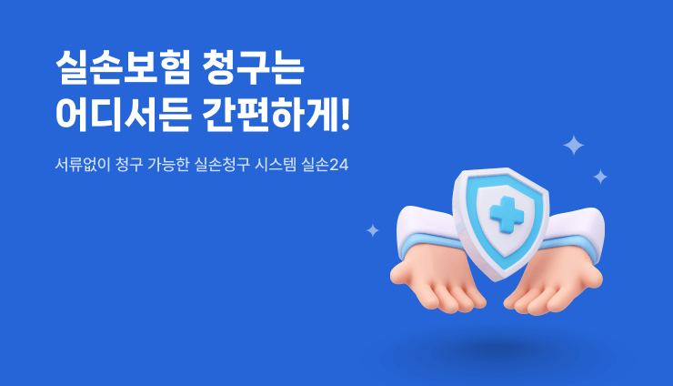

나의 실손청구
나의 자녀청구
나의부모/제3자 청구
고객지원
마이페이지
시스템소개
알람
전체메뉴
로그인
회원가입
큰글자보기

나의 실손청구
서류 발급 없이
간편하게
나의 자녀청구
미성년자 자녀의
보험청구
나의부모/
제3자 청구
성인자녀, 대리인
청구도 간편하게
청구이력
내가 신청한
보험확인
참여병원
실손24에서 청구 가능한
병원을 확인해보세요.
참여약국
실손24에서 청구 가능한
약국을 확인해보세요.
AI챗봇에게 궁금한 정보를 물어보세요
실손24의 궁금증을 해결해드려요.
시스템 소개
실손24 청구시스템을
소개해드려요.
내가 다녀온 병원 찾기
내가 다녀온 병원을
찾아보세요.
실손24 콜센터
1811-3000
평일 09시 ~ 18시 / 토요일 09시 ~ 13시
(일요일 및 공휴일 제외)
공지사항
실손청구 전산화 추가 연계 요양기관 안내 (2025.5.9 기준)
2025-05-09
내가 다녀온 약국 찾기 안내('25.6.17~)
2025-05-09
실손24 이용 약관 및 동의서 변경에 대한 공지('25.5.9~)
2025-05-07
자주하는 질문
보험금 청구가 실패되었다고 알림톡을 받았어요 (청구실패)
내가 다녀온 병원 찾기는 하루에 한번만 가능한건가요?
실손청구 시 '최초